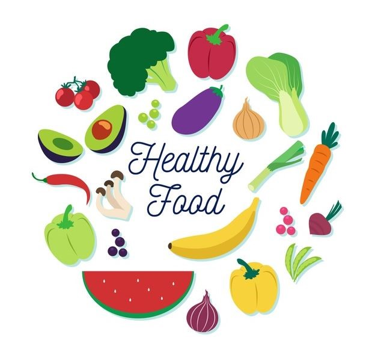

What Foods improve mental health?

From a young age, we’re taught that eating well helps us look and feel our physical best. What we’re not always told is that good nutrition significantly affects our mental health, too. A healthy, well-balanced diet can help us think clearly and feel more alert. It can also improve concentration and attention span. Conversely, an inadequate diet can lead to fatigue, impaired decision-making, and can slow down reaction time. In fact, a poor diet can actually aggravate, and may even lead to, stress and depression.
One of the biggest health impairments is society’s reliance on processed foods. These foods are high in flour and sugar and train the brain to crave more of them, rather than nutrient-rich foods such as fruits and vegetables. Lot of the processed foods are highly addictive and stimulate the dopamine centers in our brain, which are associated with pleasure and reward. In order to stop these, you should actually start to change the physiology in the brain when you pull added sugars and refined carbohydrates from your diet.
| Foods | Effects |
|---|---|
| Beans | Beans also contain thiamine, a vitamin needed for the production of acetylcholine (the neurotransmitter essential for memory). |
| Leafy greens | According to a study published in Neurology, people who regularly consumed daily servings of leafy greens such as spinach, kale and collard greens have a slower rate of cognitive decline compared to those who avoided piling their plates with greens. |
| Walnuts | Nuts can also lead to the growth of new neurons – basically, this means walnuts can help us to grow new brain cells, an essential aspect of maintaining good mental health. |
| Wholegrains | Serotonin assists in calming the mind, improving your mood and maintaining a steady sleep cycle. |
| Yoghurt | Probiotics found in cultures such as yoghurt can also impact a person’s mental health, assisting in lowering levels of stress, anxiety and depression. |
| Berries | Berries (blueberries and strawberries) also contain a compound called polyphenolics, which have been found to improve memory, concentration and attention span. |
| Oily fish | DHA is an Omega-3 fatty acid, which helps improve both short and long-term memory, contributing to optimal brain health. |
Stress and Depression
Sugar and processed foods can lead to inflammation throughout the body and brain, which may contribute to mood disorders, including anxiety and depression. When we’re feeling stressed or depressed, it’s often processed foods we reach for in search of a quick pick-me-up. During busy or difficult periods, a cup of coffee stands in for a complete breakfast and fresh fruits and vegetables are replaced with high-fat, high-calorie fast food. When feeling down, a pint of ice cream becomes dinner (or you skip dinner altogether).
According to the American Dietetic Association, people tend to either eat too much or too little when depressed or under stress. Eat too much and you find yourself dealing with sluggishness and weight gain. Eat too little and the resulting exhaustion makes this a hard habit to break. In either case, a poor diet during periods of stress and depression only makes matters worse. This cycle is a vicious one, but it can be overcome.
To boost your mental health, focus on eating plenty of fruits and vegetables along with foods rich in omega-3 fatty acids, such as salmon. Dark green leafy vegetables in particular are brain protective. Nuts, seeds and legumes, such as beans and lentils, are also excellent brain foods.
A Healthy Gut
Researchers continue to prove the old adage that you are what you eat, most recently by exploring the strong connection between our intestines and brain. Our guts and brain are physically linked via the vagus nerve, and the two are able to send messages to one another. While the gut is able to influence emotional behavior in the brain, the brain can also alter the type of bacteria living in the gut.
According to the American Psychological Association, gut bacteria produce an array of neurochemicals that the brain uses for the regulation of physiological and mental processes, including mood. It’s believed 95 percent of the body's supply of serotonin, a mood stabilizer, is produced by gut bacteria. Stress is thought to suppress beneficial gut bacteria.
Mindful Eating
Paying attention to how you feel when you eat, and what you eat, is one of the first steps in making sure you’re getting well-balanced meals and snacks. Since many of us don’t pay close attention to our eating habits, nutritionists recommend keeping a food journal. Documenting what, where and when you eat is a great way to gain insight into your patterns.
If you find you overeat when stressed, it may be helpful to stop what you’re doing when the urge to eat arises, and to write down your feelings. By doing this, you may discover what’s really bothering you. If you undereat, it may help to schedule five or six smaller meals instead of three large ones.
Sometimes, stress and depression are severe and can’t be managed alone. For some, eating disorders develop. If you find it hard to control your eating habits, whether you’re eating too much or too little, your health may be in jeopardy. If this is the case, you should seek professional counseling. Asking for help is never a sign of weakness or failure, especially in situations too difficult to handle alone.
Brain Food
Your brain and nervous system depend on nutrition to build new proteins, cells and tissues. In order to function effectively, your body requires a variety of carbohydrates, proteins and minerals. To get all the nutrients that improve mental functioning, nutritionists suggest eating meals and snacks that include a variety of foods, instead of eating the same meals each day.
Here are the top three foods to incorporate into a healthy mental diet:
- Complex carbohydrates — such as brown rice and starchy vegetables can give you energy. Millet, beets and sweet potatoes have more nutritional value and will keep you satisfied longer.
- Lean proteins — also lend energy that allows your body to think and react quickly. Good sources of protein include chicken, meat, fish, eggs, soybeans, nuts and seeds.
- Fatty acids — are crucial for the proper function of your brain and nervous system. You can find them in fish, meat, eggs, nuts and flaxseeds.
Healthy Eating Tips
- Steer clear of processed snack foods, such as potato chips, which can impair your ability to concentrate. Pass up sugar-filled snacks, it lead to ups and downs in energy levels.
- Consume plenty of healthy fats, such as olive oil, coconut oil and avocado. This will support your brain function.
- Have a healthy snack when hunger strikes, such as fruit, nuts, hard-boiled eggs, baked sweet potatoes or edamame. This will give you more energy than packaged products.
- Develop a healthy shopping list and stick to it.
- Don’t shop while hungry, since you’ll be more apt to make unhealthy impulse purchases.
- Think about where and when you eat. Find a place to sit, relax and really notice what you’re eating. Chew slowly. Savor the taste and texture.